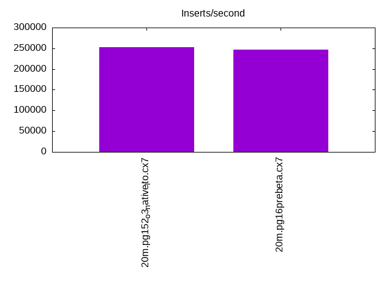
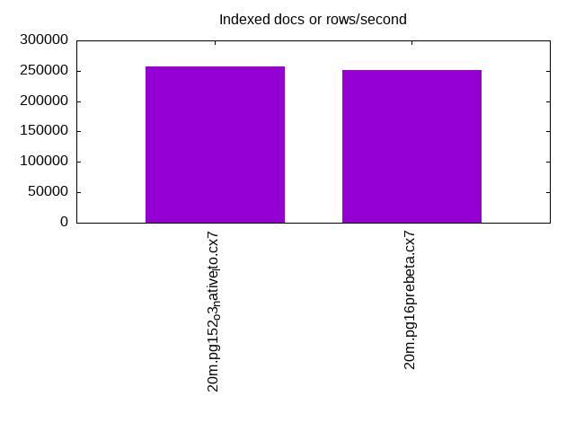
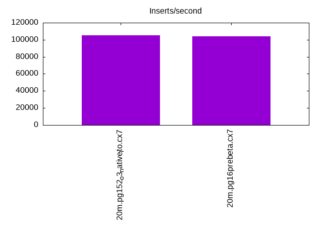
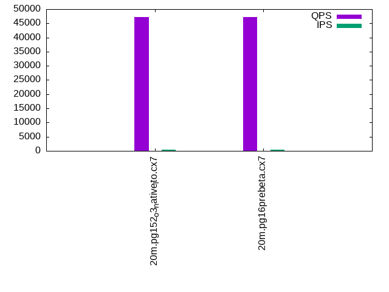
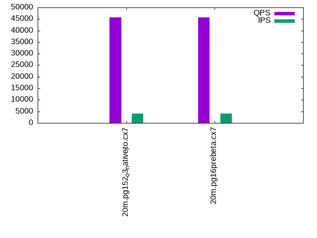

This is a report for the insert benchmark with 20M docs and 4 client(s). It is generated by scripts (bash, awk, sed) and Tufte might not be impressed. An overview of the insert benchmark is here and a short update is here. Below, by DBMS, I mean DBMS+version.config. An example is my8020.c10b40 where my means MySQL, 8020 is version 8.0.20 and c10b40 is the name for the configuration file.
The test server has 8 AMD cores, 16G RAM and an NVMe SSD. It is described here as the Beelink. The benchmark was run with 4 clients and there were 1 or 2 connections per client (1 for queries, 1 for inserts). It uses 4 tables, each client has a separate table. It loads 20M rows without secondary indexes, creates secondary indexes, loads another 20M rows then does 3 read+write tests for one hour each that do queries as fast as possible with 100, 500 and then 1000 writes/second/client concurrent with the queries. The database is cached by the storage engine and the only IO is for writes. Clients and the DBMS share one server. The per-database configs are in the per-database subdirectories here.
The tested DBMS are:
The numbers are inserts/s for l.i0 and l.i1, indexed docs (or rows) /s for l.x and queries/s for q*.2. The values are the average rate over the entire test for inserts (IPS) and queries (QPS). The range of values for IPS and QPS is split into 3 parts: bottom 25%, middle 50%, top 25%. Values in the bottom 25% have a red background, values in the top 25% have a green background and values in the middle have no color. A gray background is used for values that can be ignored because the DBMS did not sustain the target insert rate. Red backgrounds are not used when the minimum value is within 80% of the max value.
| dbms | l.i0 | l.x | l.i1 | q100.1 | q500.1 | q1000.1 |
|---|---|---|---|---|---|---|
| 20m.pg152_o3_native_lto.cx7 | 253164 | 257692 | 105263 | 47118 | 46367 | 45650 |
| 20m.pg16prebeta.cx7 | 246914 | 251250 | 104167 | 47198 | 46245 | 45621 |
This table has relative throughput, throughput for the DBMS relative to the DBMS in the first line, using the absolute throughput from the previous table.
| dbms | l.i0 | l.x | l.i1 | q100.1 | q500.1 | q1000.1 |
|---|---|---|---|---|---|---|
| 20m.pg152_o3_native_lto.cx7 | 1.00 | 1.00 | 1.00 | 1.00 | 1.00 | 1.00 |
| 20m.pg16prebeta.cx7 | 0.98 | 0.98 | 0.99 | 1.00 | 1.00 | 1.00 |
This lists the average rate of inserts/s for the tests that do inserts concurrent with queries. For such tests the query rate is listed in the table above. The read+write tests are setup so that the insert rate should match the target rate every second. Cells that are not at least 95% of the target have a red background to indicate a failure to satisfy the target.
| dbms | q100.1 | q500.1 | q1000.1 |
|---|---|---|---|
| pg152_o3_native_lto.cx7 | 399 | 1994 | 3989 |
| pg16prebeta.cx7 | 399 | 1993 | 3989 |
| target | 400 | 2000 | 4000 |
l.i0: load without secondary indexes. Graphs for performance per 1-second interval are here.
Average throughput:
Insert response time histogram: each cell has the percentage of responses that take <= the time in the header and max is the max response time in seconds. For the max column values in the top 25% of the range have a red background and in the bottom 25% of the range have a green background. The red background is not used when the min value is within 80% of the max value.
| dbms | 256us | 1ms | 4ms | 16ms | 64ms | 256ms | 1s | 4s | 16s | gt | max |
|---|---|---|---|---|---|---|---|---|---|---|---|
| pg152_o3_native_lto.cx7 | 0.011 | 99.941 | 0.049 | 0.010 | |||||||
| pg16prebeta.cx7 | 99.969 | 0.032 | 0.010 |
Performance metrics for the DBMS listed above. Some are normalized by throughput, others are not. Legend for results is here.
ips qps rps rmbps wps wmbps rpq rkbpq wpi wkbpi csps cpups cspq cpupq dbgb1 dbgb2 rss maxop p50 p99 tag 253164 0 0 0.0 306.7 111.3 0.000 0.000 0.001 0.450 27916 69.8 0.110 22 2.1 5.6 0.0 0.010 76143 70245 20m.pg152_o3_native_lto.cx7 246914 0 0 0.0 296.5 106.5 0.000 0.000 0.001 0.442 27855 69.3 0.113 22 2.1 5.6 0.0 0.010 73221 8191 20m.pg16prebeta.cx7
l.x: create secondary indexes.
Average throughput:
Performance metrics for the DBMS listed above. Some are normalized by throughput, others are not. Legend for results is here.
ips qps rps rmbps wps wmbps rpq rkbpq wpi wkbpi csps cpups cspq cpupq dbgb1 dbgb2 rss maxop p50 p99 tag 257692 0 0 0.0 132.9 61.9 0.000 0.000 0.001 0.246 741 12.7 0.003 4 3.9 9.0 0.0 0.003 NA NA 20m.pg152_o3_native_lto.cx7 251250 0 0 0.0 115.6 53.3 0.000 0.000 0.000 0.217 706 12.7 0.003 4 3.9 9.0 0.0 0.003 NA NA 20m.pg16prebeta.cx7
l.i1: continue load after secondary indexes created. Graphs for performance per 1-second interval are here.
Average throughput:
Insert response time histogram: each cell has the percentage of responses that take <= the time in the header and max is the max response time in seconds. For the max column values in the top 25% of the range have a red background and in the bottom 25% of the range have a green background. The red background is not used when the min value is within 80% of the max value.
| dbms | 256us | 1ms | 4ms | 16ms | 64ms | 256ms | 1s | 4s | 16s | gt | max |
|---|---|---|---|---|---|---|---|---|---|---|---|
| pg152_o3_native_lto.cx7 | 99.797 | 0.069 | 0.134 | 0.055 | |||||||
| pg16prebeta.cx7 | 99.815 | 0.062 | 0.123 | 0.054 |
Performance metrics for the DBMS listed above. Some are normalized by throughput, others are not. Legend for results is here.
ips qps rps rmbps wps wmbps rpq rkbpq wpi wkbpi csps cpups cspq cpupq dbgb1 dbgb2 rss maxop p50 p99 tag 105263 0 4 0.0 460.7 158.8 0.000 0.000 0.004 1.544 22594 63.4 0.215 48 8.6 24.9 0.0 0.055 28317 3847 20m.pg152_o3_native_lto.cx7 104167 0 0 0.0 453.2 154.8 0.000 0.000 0.004 1.521 22316 63.7 0.214 49 8.6 24.8 0.0 0.054 27720 3645 20m.pg16prebeta.cx7
q100.1: range queries with 100 insert/s per client. Graphs for performance per 1-second interval are here.
Average throughput:
Query response time histogram: each cell has the percentage of responses that take <= the time in the header and max is the max response time in seconds. For max values in the top 25% of the range have a red background and in the bottom 25% of the range have a green background. The red background is not used when the min value is within 80% of the max value.
| dbms | 256us | 1ms | 4ms | 16ms | 64ms | 256ms | 1s | 4s | 16s | gt | max |
|---|---|---|---|---|---|---|---|---|---|---|---|
| pg152_o3_native_lto.cx7 | 99.986 | 0.009 | 0.005 | nonzero | 0.008 | ||||||
| pg16prebeta.cx7 | 99.986 | 0.010 | 0.005 | nonzero | 0.012 |
Insert response time histogram: each cell has the percentage of responses that take <= the time in the header and max is the max response time in seconds. For max values in the top 25% of the range have a red background and in the bottom 25% of the range have a green background. The red background is not used when the min value is within 80% of the max value.
| dbms | 256us | 1ms | 4ms | 16ms | 64ms | 256ms | 1s | 4s | 16s | gt | max |
|---|---|---|---|---|---|---|---|---|---|---|---|
| pg152_o3_native_lto.cx7 | 99.569 | 0.431 | 0.008 | ||||||||
| pg16prebeta.cx7 | 99.785 | 0.215 | 0.008 |
Performance metrics for the DBMS listed above. Some are normalized by throughput, others are not. Legend for results is here.
ips qps rps rmbps wps wmbps rpq rkbpq wpi wkbpi csps cpups cspq cpupq dbgb1 dbgb2 rss maxop p50 p99 tag 399 47118 0 0.0 291.2 12.5 0.000 0.000 0.730 32.177 179672 50.5 3.813 86 8.7 25.0 0.0 0.008 11907 10772 20m.pg152_o3_native_lto.cx7 399 47198 0 0.0 291.4 12.6 0.000 0.000 0.731 32.322 179949 50.5 3.813 86 8.7 24.8 0.0 0.012 11907 10473 20m.pg16prebeta.cx7
q500.1: range queries with 500 insert/s per client. Graphs for performance per 1-second interval are here.
Average throughput:
Query response time histogram: each cell has the percentage of responses that take <= the time in the header and max is the max response time in seconds. For max values in the top 25% of the range have a red background and in the bottom 25% of the range have a green background. The red background is not used when the min value is within 80% of the max value.
| dbms | 256us | 1ms | 4ms | 16ms | 64ms | 256ms | 1s | 4s | 16s | gt | max |
|---|---|---|---|---|---|---|---|---|---|---|---|
| pg152_o3_native_lto.cx7 | 99.960 | 0.023 | 0.016 | 0.001 | nonzero | 0.019 | |||||
| pg16prebeta.cx7 | 99.960 | 0.023 | 0.016 | 0.001 | nonzero | 0.020 |
Insert response time histogram: each cell has the percentage of responses that take <= the time in the header and max is the max response time in seconds. For max values in the top 25% of the range have a red background and in the bottom 25% of the range have a green background. The red background is not used when the min value is within 80% of the max value.
| dbms | 256us | 1ms | 4ms | 16ms | 64ms | 256ms | 1s | 4s | 16s | gt | max |
|---|---|---|---|---|---|---|---|---|---|---|---|
| pg152_o3_native_lto.cx7 | 97.618 | 2.329 | 0.053 | 0.044 | |||||||
| pg16prebeta.cx7 | 97.144 | 2.815 | 0.036 | 0.004 | 0.108 |
Performance metrics for the DBMS listed above. Some are normalized by throughput, others are not. Legend for results is here.
ips qps rps rmbps wps wmbps rpq rkbpq wpi wkbpi csps cpups cspq cpupq dbgb1 dbgb2 rss maxop p50 p99 tag 1994 46367 2 0.0 273.9 20.5 0.000 0.000 0.137 10.500 175828 51.4 3.792 89 10.2 21.5 0.0 0.019 11715 9542 20m.pg152_o3_native_lto.cx7 1993 46245 2 0.0 275.1 20.5 0.000 0.000 0.138 10.510 175445 51.3 3.794 89 10.2 21.4 0.0 0.020 11651 10309 20m.pg16prebeta.cx7
q1000.1: range queries with 1000 insert/s per client. Graphs for performance per 1-second interval are here.
Average throughput:
Query response time histogram: each cell has the percentage of responses that take <= the time in the header and max is the max response time in seconds. For max values in the top 25% of the range have a red background and in the bottom 25% of the range have a green background. The red background is not used when the min value is within 80% of the max value.
| dbms | 256us | 1ms | 4ms | 16ms | 64ms | 256ms | 1s | 4s | 16s | gt | max |
|---|---|---|---|---|---|---|---|---|---|---|---|
| pg152_o3_native_lto.cx7 | 99.922 | 0.051 | 0.026 | 0.001 | nonzero | 0.023 | |||||
| pg16prebeta.cx7 | 99.911 | 0.060 | 0.028 | 0.001 | nonzero | 0.024 |
Insert response time histogram: each cell has the percentage of responses that take <= the time in the header and max is the max response time in seconds. For max values in the top 25% of the range have a red background and in the bottom 25% of the range have a green background. The red background is not used when the min value is within 80% of the max value.
| dbms | 256us | 1ms | 4ms | 16ms | 64ms | 256ms | 1s | 4s | 16s | gt | max |
|---|---|---|---|---|---|---|---|---|---|---|---|
| pg152_o3_native_lto.cx7 | 96.085 | 3.869 | 0.045 | 0.028 | |||||||
| pg16prebeta.cx7 | 95.573 | 4.378 | 0.049 | 0.029 |
Performance metrics for the DBMS listed above. Some are normalized by throughput, others are not. Legend for results is here.
ips qps rps rmbps wps wmbps rpq rkbpq wpi wkbpi csps cpups cspq cpupq dbgb1 dbgb2 rss maxop p50 p99 tag 3989 45650 26 0.2 323.1 27.4 0.001 0.005 0.081 7.021 171630 52.4 3.760 92 12.6 21.8 0.0 0.023 11556 9877 20m.pg152_o3_native_lto.cx7 3989 45621 25 0.2 323.9 27.4 0.001 0.005 0.081 7.022 171633 52.4 3.762 92 12.6 21.7 0.0 0.024 11491 9637 20m.pg16prebeta.cx7
l.i0: load without secondary indexes
Performance metrics for all DBMS, not just the ones listed above. Some are normalized by throughput, others are not. Legend for results is here.
ips qps rps rmbps wps wmbps rpq rkbpq wpi wkbpi csps cpups cspq cpupq dbgb1 dbgb2 rss maxop p50 p99 tag 253164 0 0 0.0 306.7 111.3 0.000 0.000 0.001 0.450 27916 69.8 0.110 22 2.1 5.6 0.0 0.010 76143 70245 20m.pg152_o3_native_lto.cx7 246914 0 0 0.0 296.5 106.5 0.000 0.000 0.001 0.442 27855 69.3 0.113 22 2.1 5.6 0.0 0.010 73221 8191 20m.pg16prebeta.cx7
l.x: create secondary indexes
Performance metrics for all DBMS, not just the ones listed above. Some are normalized by throughput, others are not. Legend for results is here.
ips qps rps rmbps wps wmbps rpq rkbpq wpi wkbpi csps cpups cspq cpupq dbgb1 dbgb2 rss maxop p50 p99 tag 257692 0 0 0.0 132.9 61.9 0.000 0.000 0.001 0.246 741 12.7 0.003 4 3.9 9.0 0.0 0.003 NA NA 20m.pg152_o3_native_lto.cx7 251250 0 0 0.0 115.6 53.3 0.000 0.000 0.000 0.217 706 12.7 0.003 4 3.9 9.0 0.0 0.003 NA NA 20m.pg16prebeta.cx7
l.i1: continue load after secondary indexes created
Performance metrics for all DBMS, not just the ones listed above. Some are normalized by throughput, others are not. Legend for results is here.
ips qps rps rmbps wps wmbps rpq rkbpq wpi wkbpi csps cpups cspq cpupq dbgb1 dbgb2 rss maxop p50 p99 tag 105263 0 4 0.0 460.7 158.8 0.000 0.000 0.004 1.544 22594 63.4 0.215 48 8.6 24.9 0.0 0.055 28317 3847 20m.pg152_o3_native_lto.cx7 104167 0 0 0.0 453.2 154.8 0.000 0.000 0.004 1.521 22316 63.7 0.214 49 8.6 24.8 0.0 0.054 27720 3645 20m.pg16prebeta.cx7
q100.1: range queries with 100 insert/s per client
Performance metrics for all DBMS, not just the ones listed above. Some are normalized by throughput, others are not. Legend for results is here.
ips qps rps rmbps wps wmbps rpq rkbpq wpi wkbpi csps cpups cspq cpupq dbgb1 dbgb2 rss maxop p50 p99 tag 399 47118 0 0.0 291.2 12.5 0.000 0.000 0.730 32.177 179672 50.5 3.813 86 8.7 25.0 0.0 0.008 11907 10772 20m.pg152_o3_native_lto.cx7 399 47198 0 0.0 291.4 12.6 0.000 0.000 0.731 32.322 179949 50.5 3.813 86 8.7 24.8 0.0 0.012 11907 10473 20m.pg16prebeta.cx7
q500.1: range queries with 500 insert/s per client
Performance metrics for all DBMS, not just the ones listed above. Some are normalized by throughput, others are not. Legend for results is here.
ips qps rps rmbps wps wmbps rpq rkbpq wpi wkbpi csps cpups cspq cpupq dbgb1 dbgb2 rss maxop p50 p99 tag 1994 46367 2 0.0 273.9 20.5 0.000 0.000 0.137 10.500 175828 51.4 3.792 89 10.2 21.5 0.0 0.019 11715 9542 20m.pg152_o3_native_lto.cx7 1993 46245 2 0.0 275.1 20.5 0.000 0.000 0.138 10.510 175445 51.3 3.794 89 10.2 21.4 0.0 0.020 11651 10309 20m.pg16prebeta.cx7
q1000.1: range queries with 1000 insert/s per client
Performance metrics for all DBMS, not just the ones listed above. Some are normalized by throughput, others are not. Legend for results is here.
ips qps rps rmbps wps wmbps rpq rkbpq wpi wkbpi csps cpups cspq cpupq dbgb1 dbgb2 rss maxop p50 p99 tag 3989 45650 26 0.2 323.1 27.4 0.001 0.005 0.081 7.021 171630 52.4 3.760 92 12.6 21.8 0.0 0.023 11556 9877 20m.pg152_o3_native_lto.cx7 3989 45621 25 0.2 323.9 27.4 0.001 0.005 0.081 7.022 171633 52.4 3.762 92 12.6 21.7 0.0 0.024 11491 9637 20m.pg16prebeta.cx7
Insert response time histogram
256us 1ms 4ms 16ms 64ms 256ms 1s 4s 16s gt max tag 0.000 0.011 99.941 0.049 0.000 0.000 0.000 0.000 0.000 0.000 0.010 pg152_o3_native_lto.cx7 0.000 0.000 99.969 0.032 0.000 0.000 0.000 0.000 0.000 0.000 0.010 pg16prebeta.cx7
TODO - determine whether there is data for create index response time
Insert response time histogram
256us 1ms 4ms 16ms 64ms 256ms 1s 4s 16s gt max tag 0.000 0.000 99.797 0.069 0.134 0.000 0.000 0.000 0.000 0.000 0.055 pg152_o3_native_lto.cx7 0.000 0.000 99.815 0.062 0.123 0.000 0.000 0.000 0.000 0.000 0.054 pg16prebeta.cx7
Query response time histogram
256us 1ms 4ms 16ms 64ms 256ms 1s 4s 16s gt max tag 99.986 0.009 0.005 nonzero 0.000 0.000 0.000 0.000 0.000 0.000 0.008 pg152_o3_native_lto.cx7 99.986 0.010 0.005 nonzero 0.000 0.000 0.000 0.000 0.000 0.000 0.012 pg16prebeta.cx7
Insert response time histogram
256us 1ms 4ms 16ms 64ms 256ms 1s 4s 16s gt max tag 0.000 0.000 99.569 0.431 0.000 0.000 0.000 0.000 0.000 0.000 0.008 pg152_o3_native_lto.cx7 0.000 0.000 99.785 0.215 0.000 0.000 0.000 0.000 0.000 0.000 0.008 pg16prebeta.cx7
Query response time histogram
256us 1ms 4ms 16ms 64ms 256ms 1s 4s 16s gt max tag 99.960 0.023 0.016 0.001 nonzero 0.000 0.000 0.000 0.000 0.000 0.019 pg152_o3_native_lto.cx7 99.960 0.023 0.016 0.001 nonzero 0.000 0.000 0.000 0.000 0.000 0.020 pg16prebeta.cx7
Insert response time histogram
256us 1ms 4ms 16ms 64ms 256ms 1s 4s 16s gt max tag 0.000 0.000 97.618 2.329 0.053 0.000 0.000 0.000 0.000 0.000 0.044 pg152_o3_native_lto.cx7 0.000 0.000 97.144 2.815 0.036 0.004 0.000 0.000 0.000 0.000 0.108 pg16prebeta.cx7
Query response time histogram
256us 1ms 4ms 16ms 64ms 256ms 1s 4s 16s gt max tag 99.922 0.051 0.026 0.001 nonzero 0.000 0.000 0.000 0.000 0.000 0.023 pg152_o3_native_lto.cx7 99.911 0.060 0.028 0.001 nonzero 0.000 0.000 0.000 0.000 0.000 0.024 pg16prebeta.cx7
Insert response time histogram
256us 1ms 4ms 16ms 64ms 256ms 1s 4s 16s gt max tag 0.000 0.000 96.085 3.869 0.045 0.000 0.000 0.000 0.000 0.000 0.028 pg152_o3_native_lto.cx7 0.000 0.000 95.573 4.378 0.049 0.000 0.000 0.000 0.000 0.000 0.029 pg16prebeta.cx7